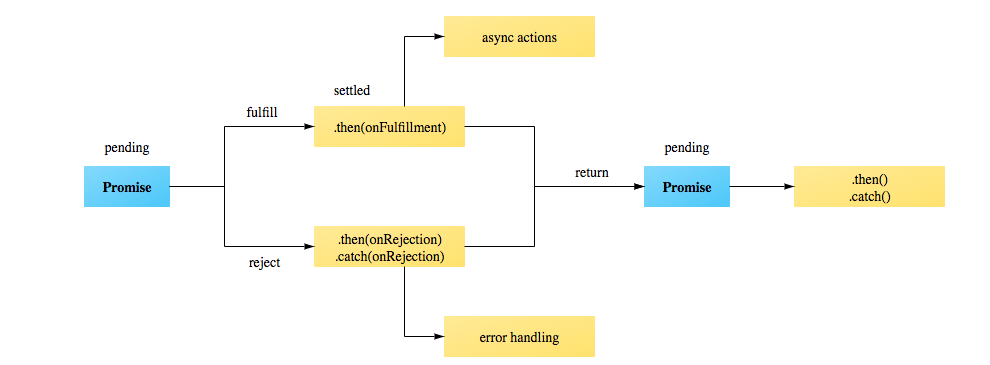

What we will cover?
- Q & A
- var and let and const
- Functions in JS?
- Classes in JS?
- Callbacks and promises
- Problem Statement
Functions in JS
- function Roger {
console.log("I am hungry")
}
- nishant = {
saySomething: function(){
console.log("Which song is this???...12.9999999999 ....Tera, Hone Laga Hoon…");
}
}
ES6
- Traditionally JavaScript is a prototype-based programming language which “classes are not present, and behavior reuse (known as inheritance in class-based languages) is accomplished through a process of decorating existing objects which serve as prototypes” - Mozilla MDN.
- This basically means that we are able to mimic object oriented programming by creating an object with prototype methods which other objects will then use as a base or inherit.
- you make prototype objects, and then … make new instances. Objects are mutable in JavaScript, so we can augment the new instances, giving them new fields and methods. These can then act as prototypes for even newer objects. We don't need classes to make lots of similar objects… Objects inherit from objects. What could be more object oriented than that? - Douglas Crockford
Things to note
- Class body can only have methods, no properties
- Still no private functions in ES6 Classes
- Class initialization is not hoisted so it will need to be declared before used (else getting a RunTime Error) unlike function declarations which would be undefined.
Callback
- A callback function, also known as a higher-order function, is a function that is passed to another function (let's call this other function “otherFunction”) as a parameter, and the callback function is called (or executed) inside the otherFunction.
- $('.pankaj').click(function(e){alert("Yahoo !!");})
Promises
- A promise represents the eventual result of an asynchronous operation. It is a placeholder into which the successful result value or reason for failure will materialize.
- 
Problem statement
- In your old assignment, when I click submit, the following will happen using AJAX.
- If I say my name is Aram, it should fetch w3schools website within a div and put a BIG RED CROSS on it.
- If I say my name is Nishant, it should show a random episode of "FRIENDS" from youtube. Use Ajax to fetch and then play a hahaha voice (use promises)
- If I say my name is Pankaj, it should create an iframe and load accunity website within it dynamically.
- People not doing assignment will treat everyone in team with something very tasty :D